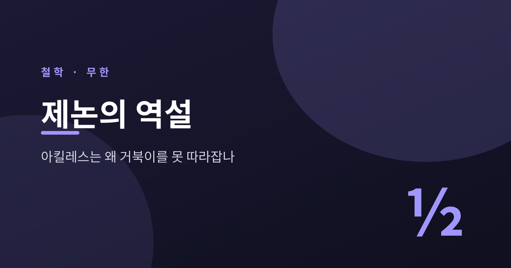
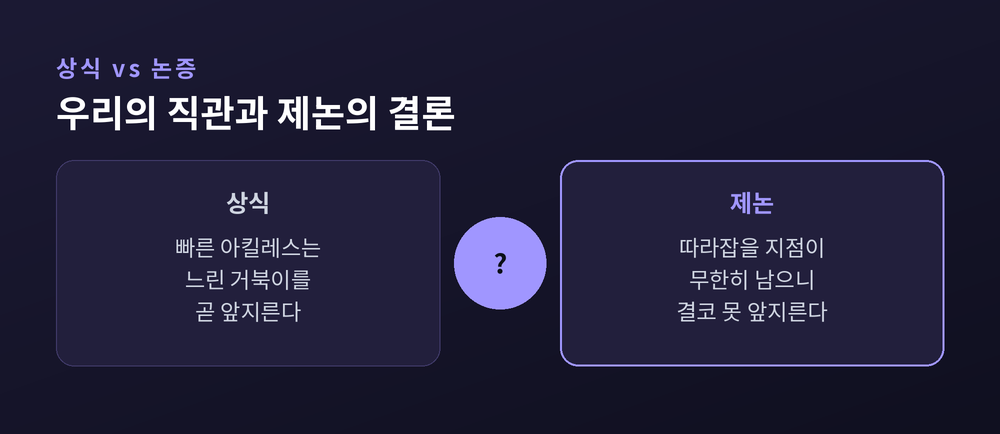

이번 글에서는 엘레아의 제논이 남긴 운동의 역설을 정리해 보겠습니다.
발 빠른 아킬레스가 느린 거북이를 끝내 따라잡지 못한다는 그 유명한 논증입니다.
왜 이런 이상한 결론이 나오는지, 그리고 그것이 어떻게 풀렸는지 차분히 따라가 보려 합니다.

거북이가 조금 앞에서 출발합니다.
아킬레스가 거북이의 출발점에 도착하는 사이, 거북이는 그만큼 앞으로 나아가 있습니다.
아킬레스가 다시 그 새 지점에 도착하면, 거북이는 또 조금 더 앞서 있습니다.
이 과정은 무한히 반복됩니다.
따라잡아야 할 지점이 무한히 남아 있으니, 아킬레스는 거북이를 결코 앞지르지 못한다는 결론에 이릅니다.
상식과 정면으로 부딪치는 이야기입니다.
누구나 빠른 사람이 느린 사람을 앞지르는 장면을 매일 봅니다.
그런데도 이 논증은 쉽게 반박되지 않습니다. 바로 그 점이 제논이 노린 것입니다.

제논은 기원전 490년경에 태어나 430년경에 세상을 떠난 것으로 전해집니다.
남부 이탈리아 엘레아 출신으로, 파르메니데스의 제자이자 벗이었습니다.
아리스토텔레스는 그를 "변증법의 발명자"라 불렀습니다.
스승 파르메니데스는 급진적인 일원론을 주장했습니다.
실재는 하나이고 나뉘지 않으며, 우리가 감각으로 보는 운동과 변화는 환상이라는 것입니다.
제논의 역할은 스승의 말을 되풀이하는 것이 아니었습니다.
그는 상대편의 상식적 가정을 그대로 받아들였습니다. 운동도 있고, 사물도 여럿 있다고 말이지요.
그런 다음 그 가정에서 부조리한 결론이 나온다는 것을 보였습니다.
이런 방식을 귀류법이라 부릅니다.
"당신 말대로라면, 이렇게 이상한 일이 벌어집니다." 이것이 제논의 전략이었습니다.
전해지는 이야기로는, 제논의 저작에 연속에 관한 마흔 개의 논증이 담겨 있었다고 합니다.
사물이 여럿 존재한다면 그것들은 동시에 무한히 크고 무한히 작아야 한다는 논증도 그 가운데 하나입니다.
정작 제논 자신의 글은 한 편도 온전히 전해지지 않습니다. 우리가 아는 것은 대부분 플라톤과 아리스토텔레스의 인용을 통해서입니다.
제논이 운동을 공격한 논증은 크게 세 가지가 전해집니다.
첫째는 이분법입니다.
어느 지점에 가려면 먼저 절반을 가야 하고, 그 절반의 절반을 가야 하며, 이런 나눔이 끝없이 이어집니다.
무한히 많은 중간 지점이 있으니 애초에 도착 자체가 불가능하다는 이야기입니다.
둘째가 아킬레스와 거북이입니다.
구조는 이분법과 같습니다. 느린 자가 빠른 자에게 결코 추월당하지 않는다는 것을 겨눕니다.
셋째는 날아가는 화살입니다.
날아가는 화살도 매 순간에는 하나의 위치를 점유합니다.
그 순간만 떼어 보면 같은 자리에 멈춰 선 화살과 구별되지 않습니다.
모든 순간에 정지해 있다면, 운동은 대체 어디서 나오느냐고 제논은 되묻습니다.
앞의 두 역설이 공간의 무한 분할을 겨눴다면, 화살은 시간의 순간을 겨눕니다. 겨냥은 다르지만 노림수는 같습니다.
세 논증의 뿌리는 하나입니다.
"유한한 시간 안에 무한히 많은 과제를 끝낼 수는 없다." 이 전제가 역설을 지탱합니다.
역설의 매듭은 수학에서 풀립니다.
아킬레스가 지나야 할 거리를 순서대로 늘어놓으면 하나의 수열이 됩니다.
절반, 그 절반, 또 그 절반. 점점 작아지는 값들이지요.
여기서 놀라운 사실이 나옵니다.
1/2 + 1/4 + 1/8 + … 처럼 무한히 이어지는 합이 정확히 1로 수렴합니다.
무한히 많은 항을 더하는데도 그 합은 유한한 값에 멈춘다는 뜻입니다.
이런 합을 등비급수라 부릅니다.
공비가 1보다 작으면, 합은 언제나 유한한 값으로 수렴합니다.
합을 구하는 공식은 S = a / (1 − r) 입니다. 첫 항이 1/2, 공비가 1/2이면 합은 (1/2)/(1−1/2), 곧 1입니다.
거리만 유한한 것이 아닙니다.
아킬레스가 등속으로 달린다면, 그 유한한 거리는 유한한 시간에 주파됩니다.
한 자료의 설정에서는 무한한 거리들이 약 101.01미터로 합해지고, 1분 0.6초 만에 끝납니다.
역설의 착오는 여기에 있었습니다.
"무한히 많은 사건"을 "무한한 양의 시간"으로 착각한 것입니다.
사건이 무한히 많아도, 그것이 유한한 시간 안에 다 일어날 수 있습니다.
제논의 논증은 무한히 많은 단계를 하나씩 밟는 그림을 우리 머릿속에 심습니다.
그 그림에서는 단계가 끝나지 않으니 도착도 없을 것 같습니다.
그러나 각 단계에 걸리는 시간도 거리와 나란히 절반씩 줄어듭니다. 줄어드는 시간의 총합 역시 유한한 값으로 모입니다.
무한한 단계를 세는 일과 무한한 시간을 흘려보내는 일은 전혀 다른 이야기였던 셈입니다.
미적분이 나오기 훨씬 전, 아리스토텔레스는 다른 방식으로 응수했습니다.
그는 무한을 두 가지로 나눴습니다. 잠재적 무한과 현실적 무한입니다.
잠재적 무한은 끝없이 나눌 수 있다는 가능성입니다.
현실적 무한은 그 무한한 나눔이 실제로 다 완결되어 있다는 뜻입니다.
아리스토텔레스는 오직 잠재적 무한만 있다고 보았습니다.
제논은 하나의 달리기를 무한히 많은 짧은 달리기의 완결로 바꿔 놓았습니다.
바로 그 지점에서 허용되지 않는 현실적 무한을 몰래 끌어들였다는 것입니다.
달리는 자의 과제는 원래 그런 것이 아닙니다.
무한히 많은 조각을 하나씩 해치우는 일이 아니라, 하나의 연속된 거리를 한 번의 연속된 동작으로 지나는 일입니다.
예전엔 공간이 무한히 쪼개진 조각들의 더미로 보였습니다.
지금은 공간이 나눌 수 있되 이미 나뉘어 있지는 않은 연속체로 이해됩니다.
이 구분 하나로 역설의 힘은 상당히 빠집니다.
아리스토텔레스는 연속체를 불가분의 점이나 원자로 조립할 수 없다고 보았습니다.
연속은 이산의 더미와는 종류가 다른 것입니다. 이 통찰은 이후 이천 년 동안 무한을 다루는 밑돌이 되었습니다.
수학은 아킬레스가 언제 어디서 거북이를 앞지르는지 정확히 계산해 줍니다.
그 점에서 역설은 분명히 해소되었습니다.
다만 모든 물음이 지워진 것은 아닙니다.
날아가는 화살의 물음은 여전히 묵직합니다. 매 순간에 운동이 없다면, 운동은 순간들의 합에서 어떻게 솟아나는가.
무한과 연속, 순간과 운동의 본성은 아직도 사유의 자리에 남아 있습니다.
제논의 논증이 한낱 말장난이 아니었던 이유가 여기 있습니다.
그의 물음은 후대 사람들에게 무한과 연속의 개념을 정밀하게 다듬으라고 밀어붙였습니다.
근대의 논리학과 미적분이 그 압력 속에서 자라났다고 해도 지나치지 않습니다.
정리하면 이렇습니다.
아킬레스는 물론 거북이를 앞지릅니다. 다만 그 당연한 사실을 설명하려고 인류는 이천 년을 썼습니다.
“좋은 역설은 틀린 결론으로 옳은 질문을 남긴다.”
거북이는 잡혔지만, 제논이 던진 물음은 아직 우리 앞을 걷고 있습니다.
</content>